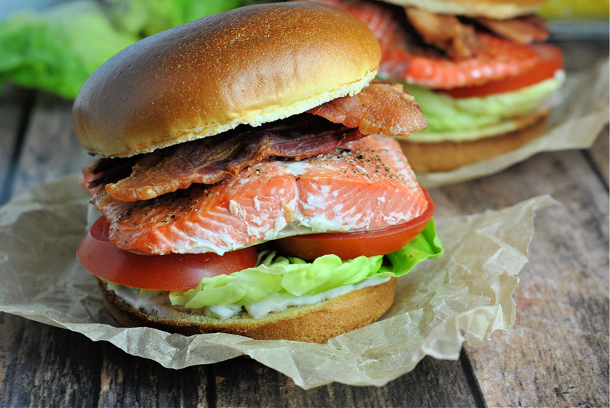

Salmon BLT Sandwich

This sandwich is for those who enjoy the BLT sandwich but also wish for there to be more meat without the extra grease of today.
Use the same teaspoon for all measurement so your sandwich will have the perfect taste!
Ingredients
- 4 slices bacon, or more to taste
- 4 slices sturdy white bread
- 6 tablespoons olive oil, divided
- 2 tablespoons salted butter
- 2 (6 ounce) salmon fillets
- 1 pinch salt to taste
- 1 pinch seasoned salt (such as Lawry's® Mediterranean Herb)
- 2 tablespoons mayonnaise, or to taste
- 4 leaves Bibb lettuce
- 4 slices tomato
- 2 slices Havarti cheese
Step by Step Instructions
- Set an oven rack about 6 inches from the heat source and preheat the oven's broiler to 475 degrees F (245 degrees C).
- Place bacon in a large skillet and cook over medium-high heat, turning occasionally, until evenly browned and extra crispy, 10 to 12 minutes. Drain bacon slices on paper towels.
- While the bacon is cooking, place bread on a baking sheet and use a pastry brush to lightly coat the tops with olive oil.
- Toast bread, without turning, under the preheated broiler until crispy (like a crouton), about 4 minutes, watching carefully as it toasts. Remove from the oven and set aside.
- Add remaining oil to a large skillet with butter. Season salmon with salt and place skin-side down in the hot pan. Cook until skin is crispy and salmon is nearly cooked through, about 6 minutes. Flip and cook until top side of fish is just browned, 2 to 3 minutes more. Remove from the pan, discard skins, and sprinkle with seasoned salt.
- Spread 1 tablespoon mayonnaise on the untoasted side of a bread slice. Top with 1 salmon fillet, 1 tablespoon pesto, 2 lettuce leaves, 2 tomato slices, 2 slices bacon, 1 slice Havarti cheese, and a slice of bread, toasted-side out. Repeat to assemble remaining sandwich.
Source